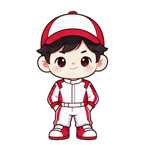

桌面上的其它窗口
文件夹
便签
赛车少年桌宠 · 交互原型
用现有素材做的可看版本：真透明角色常驻桌面，点击/双击/拖拽/右键都有反馈。
单击 → 挥手
双击 → 跳一下
拖动 → 移动
右键 → 菜单
闲置 → 随机动作
背景真透明，无白色方块
对比旧版「白块」效果

挥个手
跳一下
思考一下
坐一会儿
说句话
回到原位
当前状态：
待机 idle
素材：
现有白衣版立绘 + 4 段动作视频
动作已去白底 → 带透明通道
正式版可换成你新做的绿幕素材